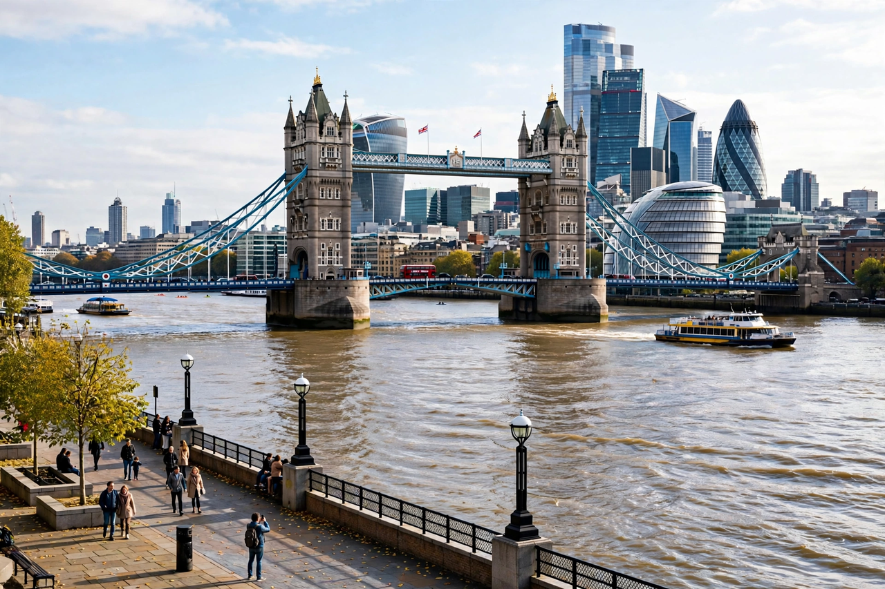

London
London is the capital of the United Kingdom, a vast city of districts from Westminster and the City to Camden, Greenwich and Richmond. Wikivoyage splits its coverage into district guides, covering arrival at Heathrow, Gatwick and other airports, travel by Tube, bus and river, and sights area by area.

[Image: The River Thames with Tower Bridge and the City skyline]
See
The Tower of London, Buckingham Palace, the British Museum, the Houses of Parliament and Big Ben, St Paul's Cathedral, the London Eye and the West End theatres headline most itineraries.
Practicalities
The Oyster and contactless payment systems cover public transport; the guide explains zones, fares, safety and day trips to places such as Windsor and Oxford.